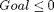
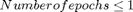
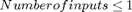
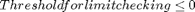
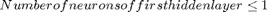
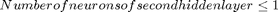

Generate_starting_point_nn
This function returns a possible starting point for a optimization algorithm. All parameters neccessary to adapt in order to design a sensor fault detector based on neural networks are set to default values here.
Contents
Related Functions
There are no sub-functions implemented by ourself.
Source Code
function [x0, IntCon, LB, UB, ConstraintFunction] = generate_starting_point_nn()
%TRAIN PARAMETER OF NEURAL NETWORK %Goal x0(1) = rand * 1/1000; %Number of epochs x0(2) = round(rand * 1000) + 1; %DESIGN OF NEURAL NETWORK %Number of Inputs --> this is equal to the number of timesteps used for the %input of the neural network. x0(3) = round(rand * 6) + 1; %Threshold for limit checking x0(4) = (randn + 50)/100; %Number of neurons per hidden layer for i = 1:2 x0(4+i) = round(rand * 20/i); if(x0(4+i) <= 1) x0(4+i) = 1; end end
Defining constraints for optimization
Lower bounds
- 
- 
- 
- 
- 
- 
LB = [0, 1, 1, 0, 1, 1];
Upper bounds
UB = [0.5, 1000, 25, 1, 15, 10];
Nonlineare Constraints
function [c, ceq] = constraints(x) % goal should be nearly zero c(1) = x(1)-0.5; % first hidden layer has to be bigger than the second one c(2) = x(6) - x(5); ceq = []; end ConstraintFunction = @constraints;
Integer values
IntCon = [2, 3, 5, 6];
end